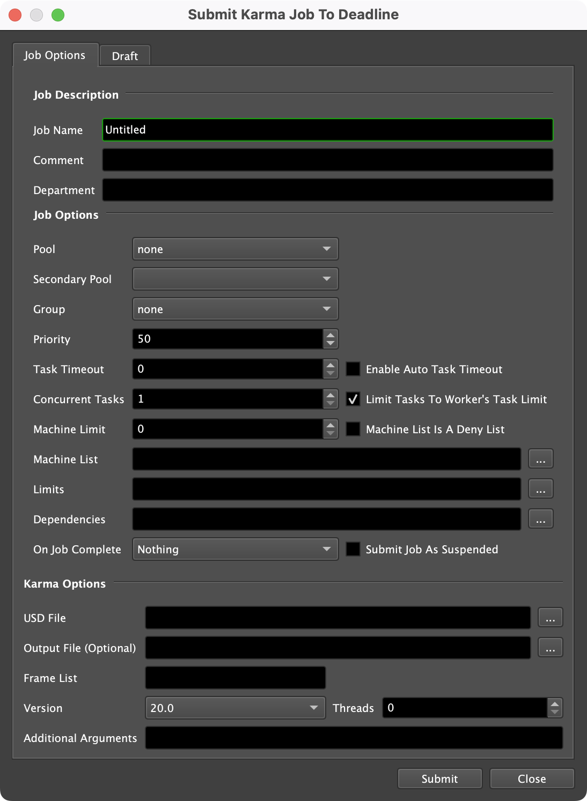
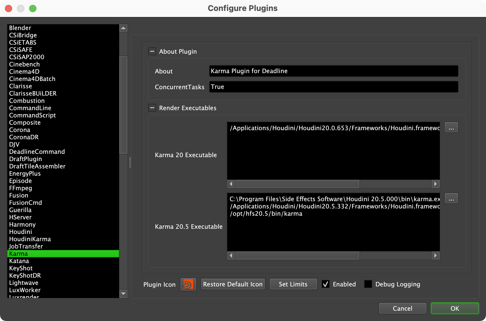

Karma Standalone¶
Job Submission¶
You can submit Karma Standalone jobs from the Monitor.
Submission Options¶
The general Deadline options are explained in the Job Submission documentation, and the Draft/Integration options are explained in the Draft and Integration documentation. The Karma specific options are:
- USD File: Specify the Karma USD file(s) to render.
To submit multiple USD frames, ensure that all USD frames are numbered and reside in the same file folder. In the USD File box, select the first USD frame in the sequence. Indicate the frames to render using the Frame List. The frames to render should correspond to the numbering in the USD file names.
Output File: The output file path.
Version: The Karma version to render with.
Threads: The number of threads to use for rendering.
Additional Arguments: Additional command line arguments to pass to the renderer.
Plugin Configuration¶
You can configure the Karma plugin settings from the Monitor. While in power user mode, select Tools -> Configure Plugins and select the Karma plugin from the list on the left.
Note, if the executable supports a MAJOR.MINOR.REVISION (9.0.123) numbering system in its path, then you will need to configure the explicit exe path to the particular revision that you have installed on your machines. Deadline does not track every possible revision available or indeed where it might be custom installed to, so a studio should verify their exe paths are correct for each application version they choose to use with Deadline. Multiple exe paths can still be declared and the first one that is found on a particular Worker on a particular platform will be used from the exe list.
Render Executables
Karma Executable: The path to the Karma executable file used for rendering. Enter alternative paths on separate lines. Different executable paths can be configured for each version installed on your render nodes.
FAQ¶
Which versions of Karma are supported by Deadline?
Karma for Houdini 20.0 and later is supported by Deadline.
Does Path Mapping work in Karma?
No. Path mapping for USD files must be handled using Output Resolvers in the Houdini scene nodes. Please refer to Houdini USD documentation for more information.
Error Messages and Meanings¶
This is a collection of known Karma error messages and their meanings, as well as possible solutions. We want to keep this list as up to date as possible, so if you run into an error message that isn’t listed here, please email Deadline Support and let us know.
Currently, no error messages have been reported for this plugin.

{kind=link}
{kind=link}